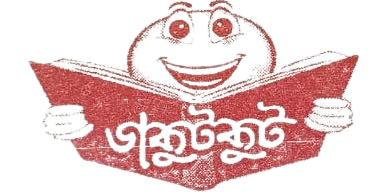
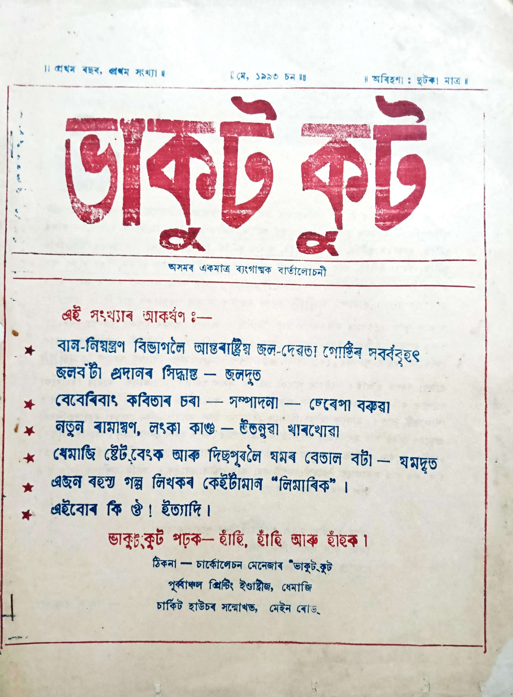
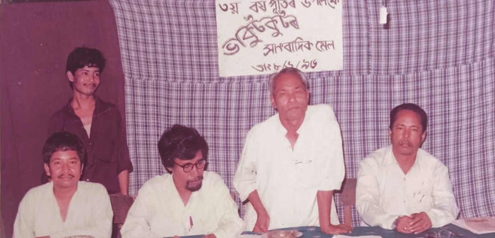

কেৱল হাঁহিবৰ বাবে
হাঁহি হাঁহি পিঢ়বৰ বাবে
ভাকুটকুট আছিল অসমৰ ধেমাজিৰ পৰা প্ৰকাশিত এখন ব্যঙ্গাত্মক আলোচনী। ১৯৯৩ চনৰ ৩ মে'ত প্ৰথম প্ৰকাশিত এই আলোচনীখন সেই সময়ত অসমৰ একমাত্ৰ ব্যঙ্গাত্মক সংবাদপত্ৰ আছিল। হাঁহি-ধেমালিৰ জৰিয়তে দুৰ্নীতি আৰু সামাজিক অনিয়মসমূহ প্ৰকাশ কৰাৰ অভিনৱ পদ্ধতিৰে প্ৰতিষ্ঠিত এই আলোচনীখনে অসমীয়া প্ৰবাদ "হাঁহিতে হাড় ভঙ্গা"ৰ আদৰ্শ অনুসৰণ কৰিছিল। ২০১৮ চনলৈকে ২৫ বছৰতকৈ অধিক সময় ধৰি প্ৰকাশিত ভাকুটকুটে অসমীয়া ব্যঙ্গাত্মক সংবাদপত্ৰিকাৰ জগতত এক উল্লেখনীয় স্থান দখল কৰিছিল। আলোচনীখনে ধেমাজি আৰু পাৰ্শ্ববৰ্তী অঞ্চলৰ স্থানীয় সমস্যাসমূহ ব্যঙ্গাত্মক ভাষ্য আৰু হাস্যৰসাত্মক প্ৰতিবেদনৰ জৰিয়তে তুলি ধৰিছিল।

ভাকুটকুটৰ জন্ম হৈছিল ধেমাজি জিলাৰ স্থানীয় বাতৰি প্ৰচাৰ আৰু দুৰ্নীতি প্ৰকাশৰ বাবে এক বিকল্প মাধ্যম সৃষ্টিৰ প্ৰয়োজনীয়তাৰ পৰা। আলোচনীখনৰ প্ৰতিষ্ঠা প্ৰত্যক্ষভাৱে প্ৰভাৱিত হৈছিল "সীমান্ত সংবাদ" নামৰ স্থানীয় বাতৰি কাকত এখনৰ বন্ধ হোৱাৰ পৰা। উমেশ চেতিয়াৰ সম্পাদনাত প্ৰকাশিত এই কাকতখন ১৯৭৯ চনত অসম আন্দোলনৰ সময়ত ধেমাজি প্ৰশাসনৰ বিৰুদ্ধে প্ৰকাশিত এটা বাতৰিৰ কাৰণে আইনী সমস্যাত পৰি বন্ধ হ'বলগীয়া হৈছিল। এই ঘটনাই ধেমাজিৰ প্ৰমুখ ব্যক্তিত্ব নৰেণ গোহাঁই, উমেশ চেতিয়া, সুৰেণ বুঢ়াগোহাঁই, চুচেন ভিতৰুৱাল কোঁৱৰ, দিলীপ হাজৰিকা, আৰু হীৰেণ পাঠকৰ দৰে লোকসকলক এনে এক প্ৰকাশনৰ পৰিকল্পনা কৰিবলৈ প্ৰেৰণা দিছিল যিয়ে একেধৰণৰ আইনী সমস্যাৰ সন্মুখীন নোহোৱাকৈ স্থানীয় সমস্যাসমূহ সম্বোধন কৰিব পাৰে। এই সমস্যাৰ সমাধান আছিল গুৰুতৰ সামাজিক ভাষ্যক হাস্যৰস আৰু ব্যঙ্গৰ মাধ্যমেৰে উপস্থাপন কৰা, যাতে কৰ্তৃপক্ষৰ বাবে প্ৰকাশনাৰ বিৰুদ্ধে গোচৰ দিয়া কঠিন হৈ পৰে।
বিমল ৰাজখোৱাৰ দ্বাৰা প্ৰতিষ্ঠিত আৰু সম্পাদিত এই আলোচনীখনৰ প্ৰকাশক আছিল তেওঁৰ পত্নী পুষ্পলতা ৰাজখোৱা। আৰম্ভণিৰ বছৰকেইটা আৰ্থিক সংকটৰ সৈতে জড়িত আছিল, পুষ্পলতাই তেওঁলোকৰ সৰু ৰেস্তোৰাঁত দিনটো কাম কৰি ছপাৰ খৰচৰ বাবে টকা উপাৰ্জন কৰিছিল। প্ৰথম সংখ্যাটো প্ৰায় সম্পূৰ্ণৰূপে সম্পাদকে নিজেই বিভিন্ন ছদ্মনামত লিখিছিল, প্ৰখ্যাত হাস্যৰসিক শম্ভু চুতীয়াৰ অৱদানৰ সৈতে। প্ৰাৰম্ভিক মূল্য মাত্ৰ দুই টকা আছিল, আলোচনীখন মডাৰ্ণ প্ৰিন্টাৰ্চ, পূৰ্বাঞ্চল প্ৰিন্টাৰ্চ, নৰ্থ-ইষ্ট প্ৰিন্টাৰ্চ, আৰু মিলি প্ৰিন্টাৰ্চকে ধৰি বিভিন্ন স্থানীয় ছপাশালত ছপা কৰা হৈছিল। প্ৰত্যাহ্বানৰ সত্ত্বেও আলোচনীখনৰ প্ৰচলন ক্ৰমান্বয়ে বৃদ্ধি পাইছিল, শীৰ্ষ বছৰসমূহত প্ৰতিমাহে ৩,০০০ৰো অধিক কপি ছপা হৈছিল। আলোচনীখন ২০১৮ চনলৈকে নিয়মিত প্ৰকাশ অব্যাহত ৰাখিছিল, তাৰ পিছত মাজে মাজে সংখ্যা প্ৰকাশ পাইছিল।
ভাকুটকুটৰ বিষয়বস্তু আছিল স্থানীয় বাতৰিৰ প্ৰতি ব্যঙ্গাত্মক দৃষ্টিভঙ্গীৰ দ্বাৰা বিশেষভাৱে চিহ্নিত, বিশেষকৈ ধেমাজি আৰু পাৰ্শ্ববৰ্তী অঞ্চলৰ দুৰ্নীতি আৰু প্ৰশাসনিক ব্যৰ্থতাৰ ওপৰত গুৰুত্ব দিয়া হৈছিল। আলোচনীখনৰ প্ৰথম সংখ্যাত বান নিয়ন্ত্ৰণ বিভাগৰ ভাঙা বান্ধ মেৰামতিৰ অৱহেলাৰ বিষয়ে এক ব্যঙ্গাত্মক প্ৰতিবেদন প্ৰকাশ পাইছিল, যিটো হাস্যকৰ শিৰোনাম আৰু উপহাস বঁটাৰ মাধ্যমেৰে উপস্থাপিত হৈছিল। প্ৰকাশনাত ব্যঙ্গাত্মক সংবাদ প্ৰতিবেদন, হাস্যৰসাত্মক কবিতা, চুটিগল্প, আৰু শিশুসকলৰ বাবে বিশেষ শিতানকে ধৰি বিভিন্ন বিভাগ অন্তৰ্ভুক্ত আছিল। এটা জনপ্ৰিয় বৈশিষ্ট্য আছিল "ভাকুটকুটৰ ৰাশিফল", যিটো ড° বনমালী গোস্বামী আৰু অম্বিকা উপাধ্যায়ে অৱদান কৰিছিল। আলোচনীখনে ৰঙালী বিহুৰ দৰে অনুষ্ঠানৰ বাবে আৰু বানপানীৰ সময়ত বিশেষ সংখ্যাও প্ৰকাশ কৰিছিল, যিয়ে উৎসৱমুখৰ আৰু সংকটপূৰ্ণ দুয়ো পৰিস্থিতিকে সমান ব্যঙ্গাত্মক ব্যৱহাৰেৰে সম্বোধন কৰাৰ প্ৰতিশ্ৰুতি প্ৰদৰ্শন কৰিছিল।

আলোচনীখনৰ লেখা শৈলীত স্থানীয় ভাষা আৰু কথ্য ভাষাৰ ব্যৱহাৰ আছিল, যিয়ে ইয়াক ধেমাজিৰ গ্ৰাম্য জনসাধাৰণৰ বাবে অতিশয় সুলভ কৰি তুলিছিল। উল্লেখনীয় অৱদানকাৰীসকলৰ মাজত আছিল হোমেন চাংমাই, উমা গোহাঁই, যোগেন লালুং, পানীৰাম চিৰিং, শম্ভু চুতীয়া, ভূপতি বৰুৱা, মণিৰাম বৰা, বীৰেণ কোঁৱৰ, আৰু আৰু বহুতো। পৰৱৰ্তী বছৰসমূহত, বিশেষকৈ ২০১৪ চনৰ পিছত যেতিয়া ডিজিটেল প্ৰকাশনা অধিক সুলভ হৈ পৰিছিল, আলোচনীখনে পুষ্পা চুতীয়া, নন্দেশ্বৰ বৰগোহাঁই, আৰু লোকনাথ গগৈৰ দৰে নতুন অৱদানকাৰীসকলক আকৰ্ষণ কৰিছিল। প্ৰকাশনাত "ফেচবুকৰ একুৰি কবিতা চেকুৰ" নামৰ এটা শিতানো আছিল, যিয়ে বিভিন্ন ফেচবুক কবি আৰু লেখকৰ হাস্যৰসাত্মক কবিতা অন্তৰ্ভুক্ত কৰিছিল। ডিজিটেল যুগৰ বিষয়বস্তুৰ সৈতে এই খাপ খোৱাই আলোচনীখনৰ বিৱৰ্তনক প্ৰদৰ্শন কৰিছিল যদিও হাস্যৰসৰ মাধ্যমেৰে সামাজিক ভাষ্যৰ মূল ব্যঙ্গাত্মক লক্ষ্য অক্ষুণ্ণ ৰাখিছিল।